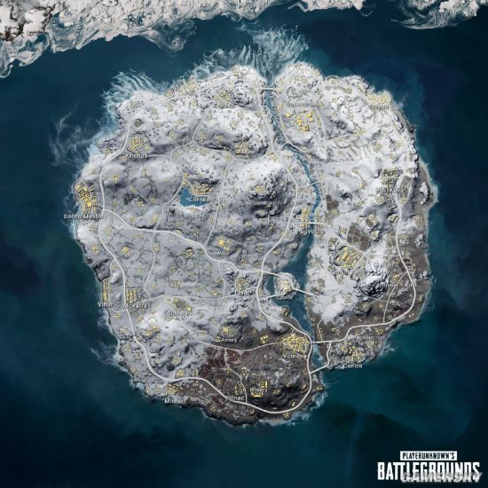
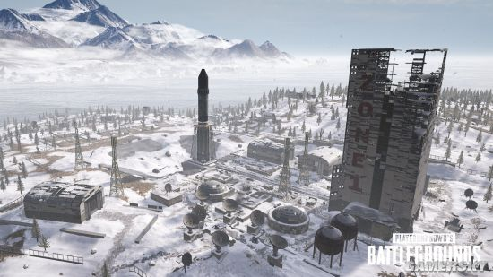
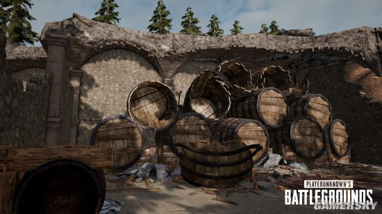

《绝地求生》最新的冬季地图“维寒迪”于12月7日已经在测试服与玩家们见面了，官方今日公布了一份“维寒迪”的详细的旅游指南，一起来了解一下。

维寒迪三分之二的面积都覆盖着皑皑白雪，极目远望，一副冰天雪地草木颓败的极寒景象。维寒迪的南部地区略微温暖，积雪较小。啊！对了！在维寒迪还有冻结的海岸线这一独特的景象。您可以在冰面上移动，但是要当心载具可能会掉入冰窟里！当然，这也是一个非常独特的战略要素。
随处可见和维寒迪雪天相适宜的建筑。在地图南部的大城市附近，可以看到与艾伦格、米拉玛还有萨诺完全不同的建筑设计。
这是对维寒迪地图的整体概述。现在，就让我们来看看几个主要的城市以及周围环境。
Zabava是一个具有许多古老的小房子的临港小镇，小镇里常常能看到水手的身影，他们时常会在小镇里打尖住店。
Cosmodrome是一个废弃的航空中心。发射台上还停留着等待发射的火箭，巨大的圆顶形车间，维护中的宇宙飞船，高耸入云却破败不堪的地标性塔楼，如您所见，时间在这里停滞不前。

Winery是维寒迪最温暖的地方。作为维寒迪唯一的葡萄产区，在无法解释的地面塌陷导致城市衰败前，它曾经是一个很受维寒迪的富人及贵族追捧的城市。然而现在，你只能在城市的部分地方看到它辉煌的过去。

还有许多关于维寒迪的彩蛋正在等着您探索解密。 对啦，您还可以在等待运输机的时候玩雪球打雪仗，还可以和朋友一起用足迹玩“你画我猜“。 维寒迪对我来说就像一个冬季游乐园。
此外，新枪械G36C和新款雪地摩托车将提升维寒迪的独特性和趣味性。 在正式服更新维寒迪相关内容之前，测试服将一直对大家开放，所以请继续关注并试玩我们的雪地图。
维寒迪见！